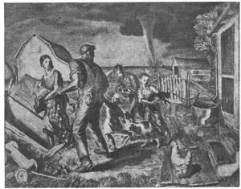
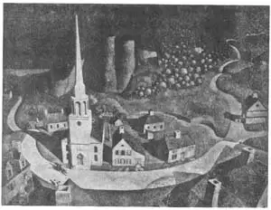
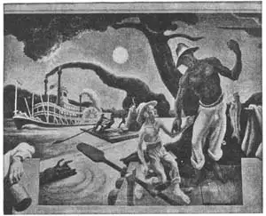
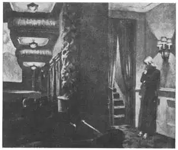
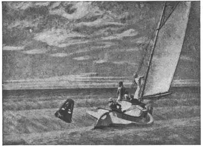
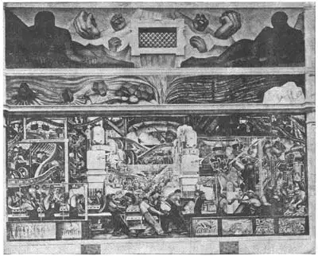

90
MORE MODERN PAINTERS
更多现代画家

EVERYBODY likes the circus. Clowns! elephants! trained horses! peanuts! Everybody likes the circus.
Acrobats! tight-rope walkers! camels! band music!
Suppose you had a choice of going to the circus or painting a picture. Which would you choose? You’d choose the circus. Everybody likes the circus.
But if you were an artist you might think it more fun to paint a picture. Artists like the circus but they also love to paint. That’s why they are artists.
An artist named John Steuart Curry loved to paint pictures. Painting was his business. He also loved the circus. The circus was his hobby. So, for a while, he combined the two. He joined the circus and traveled with it so he could paint pictures of it. He painted pictures of the acrobats, trapeze performers, elephants, and equestriennes.

No.90-1 THE TORNADO（《龙卷风》） CURRY（柯里 作）
Courtesy of The Hackley Art Gallery, Muskegon, Michigan
John Steuart Curry was born in Kansas. Besides circus pictures he painted many pictures of Kansas, especially of farm life in Kansas. The first picture in this chapter shows a tornado in Kansas. Many people have never seen a tornado, but in parts of Kansas tornadoes happen so often that people build storm cellars where they can go to be safe from these powerful whirlwinds. The foreground of Curry’s tornado painting shows a farmer and his family hurrying into their storm cellar. It’s an exciting picture. Will the tornado hit the farm house and tear it to pieces? Will the family be safe? Will their barns be destroyed? Will the tornado ruin their crops?
John Steuart Curry’s pictures are modern paintings, but they are not at all like the modern art that you read about in the last chapter. Modern art includes many kinds of paintings. Painters keep trying new ways of painting and it’s a good thing they do. If artists always painted the way artists painted in the past their paintings would get tiresome. Non-objective and non-realistic paintings were new ways of painting when they were started. But they aren’t the only kinds of modern art. In this chapter all the paintings are modern but you can tell easily that they are not like non-objective, or non-realistic, or surrealistic paintings.

No.90-2 THE MIDNIGHT RIDE OF PAUL REVERE（《午夜纵马飞奔的保罗·列维尔》）
WOOD（伍德 作）
Courtesy of The Metropolitan Museum of Art
“The Tornado” is a modern painting of a modern scene. “The Midnight Ride of Paul Revere” by Grant Wood is a modern painting of a scene in the past. This picture has the same title as the famous poem by Longfellow. It shows Paul Revere galloping on his horse through a New England village to warn the people that the redcoats are coming. Bright moonlight makes it easy to see the village church, the houses, the trees, the road, and the swiftly moving horse and rider. Lights are being lit in the houses Paul Revere has passed. Minute men carrying muskets will soon be marching from the village to the battle that began the war of independence.

No.90-3 HUCK FINN AND JIM（哈克·费恩和吉姆）
Part of the Thomas Hart Benton murals in the capitol building, Jefferson City, Missouri
（托马斯·哈特·本顿 作 密苏里州杰斐逊市市政大厅的部分壁画）
Massie—Missouri Resources Div.
Not all of Grant Wood’s paintings are of exciting events. One very famous painting he called “American Gothic.” It shows an elderly Iowa farmer and his wife looking straight out from the picture. Behind them is a wooden house with the Gothic-style trimmings that some American houses still have. The man and woman look like serious, honest, kindly, hard-working people. How do I know they are Iowa people? Because Grant Wood’s home was in Iowa and he liked to paint pictures of his own state.
Both Grant Wood and John Steuart Curry were from the great middle western part of the United States. A third famous painter from central United States is Thomas Hart Benton. He painted pictures of his native state of Missouri. Many of his paintings are large murals on the walls of public buildings. “Huck Finn and Jim” is one of these large paintings. Mark Twain’s book Huckleberry Finn tells of Huck’s trip down the Mississippi on a raft with his friend Jim, who was escaping from slavery. The picture shows them on their raft. It’s a good picture to remember when you read the book.
Another modern painter is Edward Hopper. His pictures are mostly of the eastern part of the United States. “New York Movie,” however, might fit a large movie theater in any large city. It shows the inside of a movie theater with a girl usher standing near the stairway of the balcony. It is an unusual subject for a painting. For one thing it’s generally pretty dark in a movie theater. For another thing movie theaters are often not subjects to inspire a painter by their beauty. But in spite of these handicaps the painting turned out to be a very good one because of the skill of the artist.

No.90-4 NEW YORK MOVIE（《纽约电影》）（霍普 作）
One of the differences between many modern artists and artists of the past is that artists now so often paint common, everyday subjects; people and places that are familiar to all of us. In Renaissance times and for long afterwards most of the subjects chosen by painters were important people, kings and queens, lords and ladies; or they were gods and goddesses, or religious subjects, or beautiful scenery. Very seldom did the ordinary, unimportant people and scenes get painted. A few painters like the Breughels in Flanders, Hogarth in England, Millet in France, did paint the people that most artists found uninteresting. But now most artists paint people and scenes that are part of the familiar life of their countries.
Edward Hopper also painted “Ground Swell” which is just as different as can be from“New York Movie.” Instead of a dark indoor scene in a huge city, it is a picture of waves and sunshine and the outdoor fun of sailing a boat.

No.90-5 GROUND SWELL（《翻滚的大地》） HOPPER (霍普 作）
In the Collvction of The Corcoran Gallery of Art
Do you know any artists? Real live artists? There are hundreds of painters in America today. You have more chance of knowing a real live artist now than ever before in history. Certainly more people are painting now than ever before. The paintings of Curry, Wood, Benton, and Hopper are merely samples of hundreds that could have been chosen for this chapter. Many people are painting just for the fun of it. Painting isn’t their chief job. They just like to paint. For example, Winston Churchill, the great prime minister of Great Britain during World War II, took up painting as a hobby and became very good at it.
One country that hasn’t been mentioned in this book is Mexico. Between World War I and World War II Mexican artists became known all over the world for their paintings. The most famous Mexican artist is Diego Rivera. He painted many of his pictures on the walls of buildings. Most of these murals are in Mexican buildings but some are on walls in the United States. He liked to paint pictures of working people and especially of the Mexican Indian workers.
Notice in the picture called “Man and Machinery” how the whole painting is filled with people and machinery. This painting is on a wall in Detroit.
What you have read about in the last two chapters is this:
Modern painting is of many kinds. Some of these are called non-objective, and non-realistic, and surrealistic. Many others are realistic. Many new ways of painting are being tried out. There are more artists than ever before. The United States has many good painters. So has Mexico.

No.90-6 MAN AND MACHINERY（“MAKING OF THE MOTOR”）
（《人与机器〈制造汽车〉》） RIVERA（里维拉 作）
Courtesy of The Detroit Institute of Arts
What you haven’t read about in the last two chapters is this true statement: almost all countries in the world now have good painters. So, wherever you go, you should be able to find paintings worth looking at.
【中文阅读】
每个人都喜欢马戏团。
小丑！大象！驯服的马！配角！
每个人都喜欢这些马戏团的角色。
杂技演员！走绳索者！骆驼！乐队！
假设你有两个选择，要么去马戏团，要么去画画。你会选择哪一个呢？你肯定会选择去马戏团。
但是如果你是一位画家，你肯定觉得作画有趣多了。艺术家喜欢看马戏，但更热爱画画，这就是为什么他们被称为艺术家。
一位叫做约翰·斯图尔特·柯里的人热爱画画，这是他的职业。他也喜欢看马戏，这是他的业余爱好。因此，有一段时间，他把二者融为一体。他加入了马戏团，并且随团旅行，以便能画出跟马戏有关的画。他画了杂技演员、秋千表演者、大象，还有 女骑手。
约翰·斯图尔特·柯里出生在美国的堪萨斯州。他除了画马戏团外，还画了许多有关堪萨斯的画，特别是堪萨斯的农场生活。这一章的第一幅画的是堪萨斯的龙卷风。许多人从来就没看过龙卷风，但是在堪萨斯州有些地方，龙卷风频发，以至于人们不得不建一个风暴隔间，等风暴来时躲进去，避开强大的旋风。柯里龙卷风画中的前景描述的是一位农夫和他的家人正一起匆忙躲进风暴隔间。这幅画很触动人心。龙卷风会袭击农舍吗？会把农舍撕成碎片吗？这个家庭会脱离危险吗？他们的谷仓会遭到破坏吗？龙卷风会糟蹋他们的庄稼吗？
约翰·斯图尔特·柯里的画算是现代绘画，但是它与前一章所谈的现代艺术又不完全一样。现代绘画艺术种类繁多。画家们尝试着新的作画方式，这样做很好。如果艺术家总是沿袭前人的作画方式，那画出来的作品该有多枯燥啊。非写实绘画和非现实主义绘画就是他们尝试新方法的开端。但它们绝不只是现代艺术的两个派别。这一章所介绍的作品都是现代绘画，但你却能轻松地辨别出它们不像是非写实绘画，也不像是非现实主义绘画，甚至不像是超现实主义作品。
《龙卷风》是一幅展示现代生活情境的现代画作。格兰特·伍德的《午夜纵马飞奔的保罗·列维尔》则是一幅描述过去场景的现代作品。这幅画和朗费罗的一首名诗标题相同。它展示的是保罗·列维尔纵马飞奔穿过新英格兰村庄，警告人们英军即将到来。在皎洁的月色下，乡村教堂、农舍、树木、道路，以及风驰电掣的马和骑马人都清晰可见。保罗·列维尔所经过的人家都点亮了灯火。民兵都带着毛瑟枪出来了，很快就会从村庄走向战场，掀开美国独立战争的篇章。
格兰特·伍德的绘画并非都描述触动人心的事件。他有一幅名画称作《美国的哥特式》。它描述的是一位衣阿华州的老农和妻子直视前方的场景。他们身后是一座带有哥特式建筑装饰物的木屋，美国有些房屋仍然可见。老农和妻子看上去都很严肃，但显出诚实、善良、勤劳。怎么知道他们是衣阿华州的呢？因为格兰特·伍德的家就在衣阿华州，他喜欢画自己的家乡。
格兰特·伍德和约翰·斯图尔特·柯里都来自美国广漠的中西部地区。第三位名画家叫托马斯·哈特·本顿，来自美国中部。他画了许多有关他家乡密苏里州的画。他的许多作品都是在公共建筑大楼外墙上的壁画。《哈克·费恩和吉姆》就是巨幅壁画之一。马克·吐温的《哈克贝里·费恩历险记》讲述了哈克与他的朋友吉姆乘小木筏沿密西西比河而下的故事。吉姆是个逃亡的奴隶。这幅图展示的是他们正在小木筏上的情景。读这本书时再看这幅画能很好地帮助记忆。
另外一位现代画家是爱德华·霍普。他的作品大部分都是描述美国东部生活的。但是《纽约电影》这幅画与任何一座大城市的大型电影院都极其相称。它展示了电影院的内景，画上有一位女引座员正站在阳台的楼梯口处。这对一幅画来说是一个不同寻常的主题。一方面，电影院里光线相当暗；另一方面，电影院里一般没有什么事物能以美丽外表吸引画家。但尽管有这些硬伤，这幅画画得还是非常好的，它表现了艺术家高超的绘画技巧。
现代艺术家与过去艺术家的区别，就是现代的艺术家经常以日常生活为题材，画我们熟悉的人或地点。在文艺复兴以及之后的很长一段时期内，艺术家们选择的题材多为重要的人物，如国王、王后、伯爵和贵妇；要么就是诸位神灵；或以宗教为主题，或描画美丽的风景。只有极少的时候才会画极其普通的小人物或不知名的风景。像佛兰德斯的勃鲁盖尔、英国的贺加斯、法国的米勒这样几位极少数的画家，画的人物却使大多数画家不以为然。但是现在的艺术家们所描述的人物和场景都是取自自己国家里人们最熟悉的生活。
爱德华·霍普的另一幅作品《翻滚的大地》和《纽约电影》一样与众不同。画面所描述的不是巨大城市内阴暗的室内场景，而是在阳光灿烂的室外划船游玩的乐趣。
你知道还有哪些艺术家吗，那真正的活生生的艺术家？美国现在有成百上千艺术家呢。你比以往任何时候都更有机会认识这些当代的艺术家。当然，现在画画的人要比以往多多了。这一章所提到的柯里、伍德、本顿，以及霍普，他们的绘画只是成百上千艺术家中的几位典型。更多的人画画只是为了好玩。画画并不是他们的职业，他们只是喜欢画画。譬如，温斯顿·丘吉尔，“二战”期间英国伟大的首相，就喜欢在空余时间画画，并且还画的非常不错。
本书没有提到的国家是墨西哥。墨西哥画家在“一战”、“二战”期间开始闻名于世。其中最著名的墨西哥画家是迭戈·里维拉。他在许多建筑物的墙壁上画了许多画。大部分壁画在墨西哥，少量在美国。他喜欢画工人，特别是墨西哥的印第安工人。
看看这幅叫做《人与机器》的画作，可以看到整幅画上都是人和机器。这幅画是画在底特律的一堵墙壁上的。
你在最后这两章所阅读的内容总结如下：
现代绘画有很多种类。有的属于非写实、非现实主义和超现实主义。另外还有许多种是属于现实主义的。如今人们仍在尝试其他新的绘画方法。艺术家在当今比在以往任何时候都要多。美国有许多优秀的画家，墨西哥也有。
最后两章没有提到的事实是：当今世界几乎所有的国家都有优秀的画家。因此，无论走到哪里，都应该去参观值得欣赏的绘画作品。